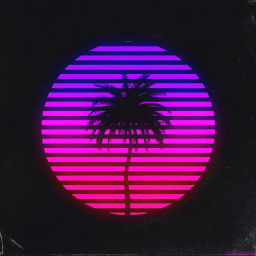

Fuera ya de el vestuario; la Cibernética, diseños y arquitectura retro, letras japonesas, los Video Juegos retro, marcas retro, luces de neón, colores pastel, colores fluor, luz negra o luz ultravioleta, el láser, la fluorescencia, Retrofuturismo, Los viajes en el tiempo, más bien pocos tattos, y si aparecen normalmente son más bien discretos, también sienten pasión por los robots, la publicidad y la imagen de los 80's a veces también la de los 90's y los 70's, el Rubik Cube, la escultura helenística, los ovnis y los extraterrestres, coches deportivos, arquitectura minimalista y retro de diseños elegantes

El escritor de música Adam Harper, de Dummy Mag, describe el género como "irónico y satírico o verdaderamente aceleracionista", indicando que el propio término vaporwave es una alusión tanto al vaporware como a la idea de la energía libidinal sometida a la sublimación implacable bajo el capitalismo.9
AtomH lo define como "Es una mofa a lo que se pretendió hacer en los 80's. Es un género consistente y agradable." así mismo también describe algunas canciones como "Es una forma nueva de disfrutar una canción, especialmente por ralentización de los sonidos, ya que haciendo esta técnica el oído puede procesar mejor lo que escucha."